中1 理科・化学
身の回りの
物質
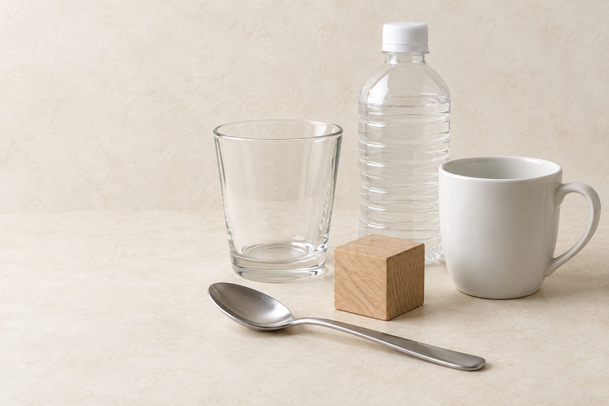
身の回りを見てみよう
これは、何だろう？
今答えたのは、物の名前？ 材料の名前？
一つの物を、二つの見方で
このガラスのコップを見てみよう
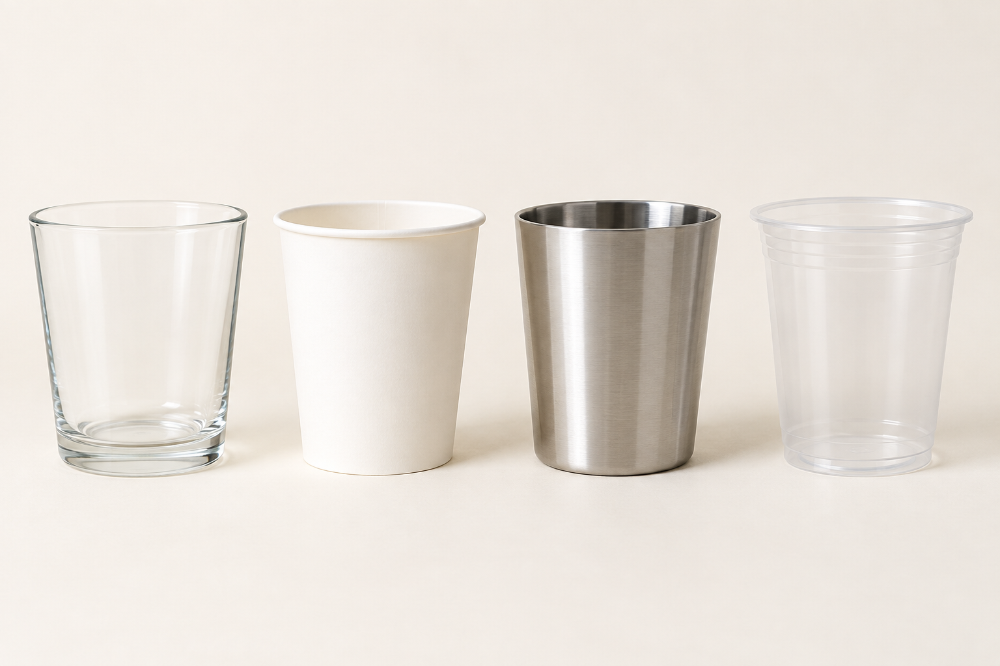
覚えること
物体と物質
形や使い道に注目した、物の呼び方
物体が何でできているかに注目した、材料の呼び方
コップは物体、ガラスは物質
物質に注目
形も使い道も違うけれど
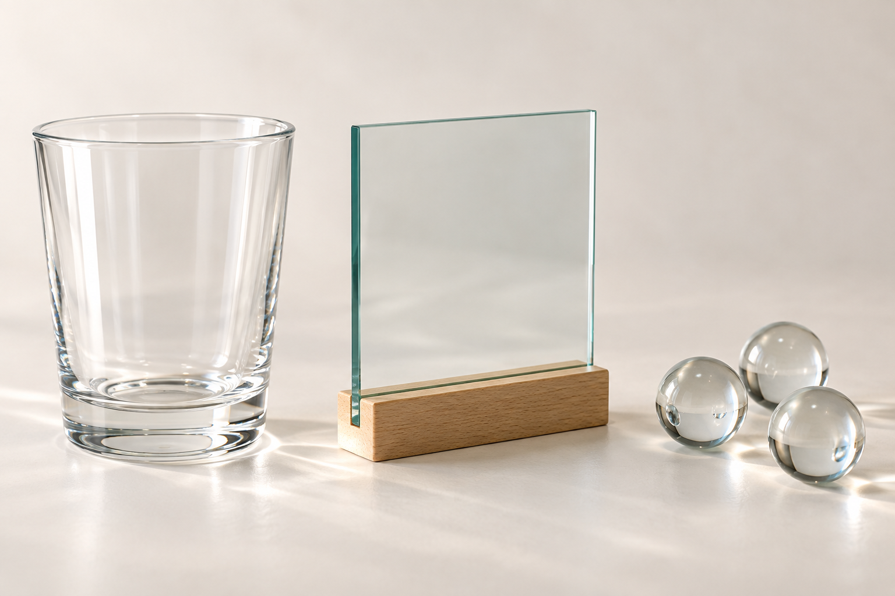
三つに共通する物質は？
答え
すべて、ガラスでできている
同じ物質から、違う物体を作れる
今度は、物体に注目
全部「コップ」。何が違う？
コップを比べる
使い道が同じでも、材料は選べる
同じ物体でも、違う物質から作れる
確認
物体と物質に分けよう
この授業のまとめ
物を見る二つの視点
物体
物質
次は、物質に共通する性質を調べる
物質の性質
金属と非金属
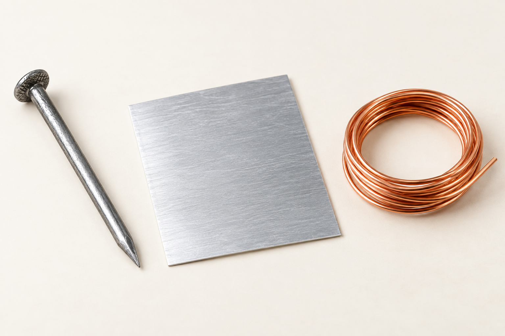
物質に共通する性質を調べよう
銅板で比べよう
表面をみがくと、光を反射する
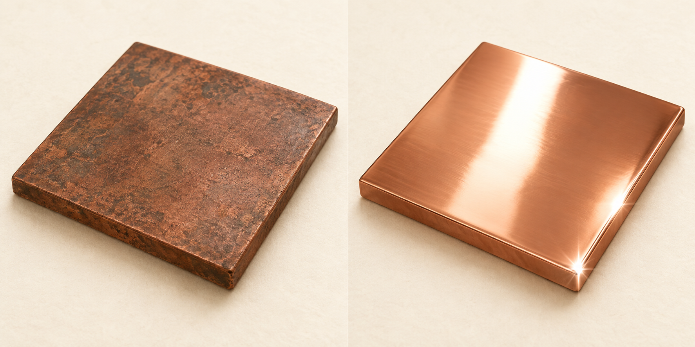
金属光沢
金属の共通点
電気と熱をよく伝える
電流が流れやすい
熱が伝わりやすい
力を加えたとき
広げられる。細くのばせる
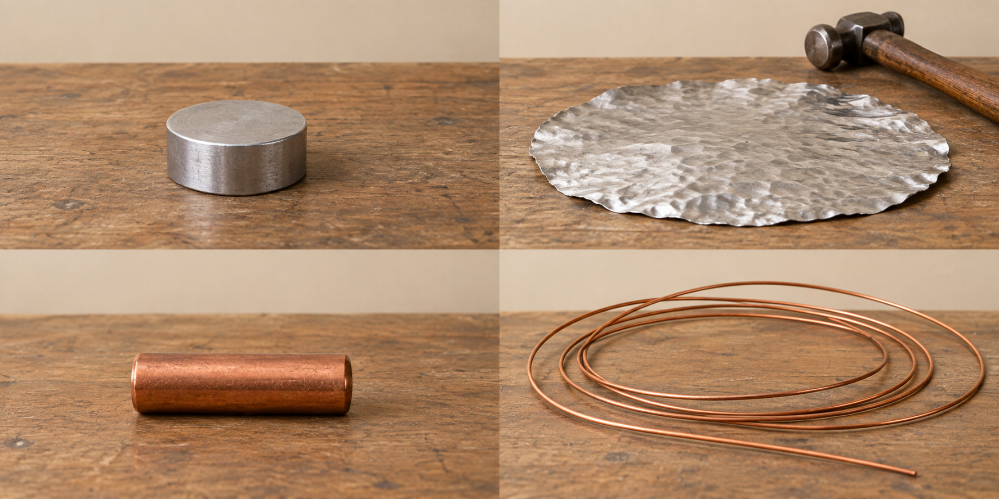
たたく前 → たたいた後
薄く広がる
展性
引く前 → 引いた後
細くのびる
延性
覚えること
金属に共通する性質
金属以外の物質を非金属という
よくある誤解
金属なら、すべて磁石につく？
磁石につくことは、金属共通の性質ではない
物質の識別
白い粉を見分ける
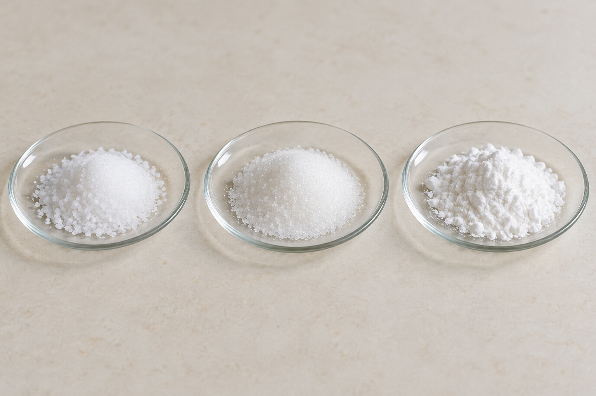
見た目だけで決められるだろうか
食塩・砂糖・デンプン
どれも白い粉に見える
見た目だけでは決められない
見分ける手がかり
それぞれの性質を比べる
加熱したときの変化
砂糖は黒くこげる
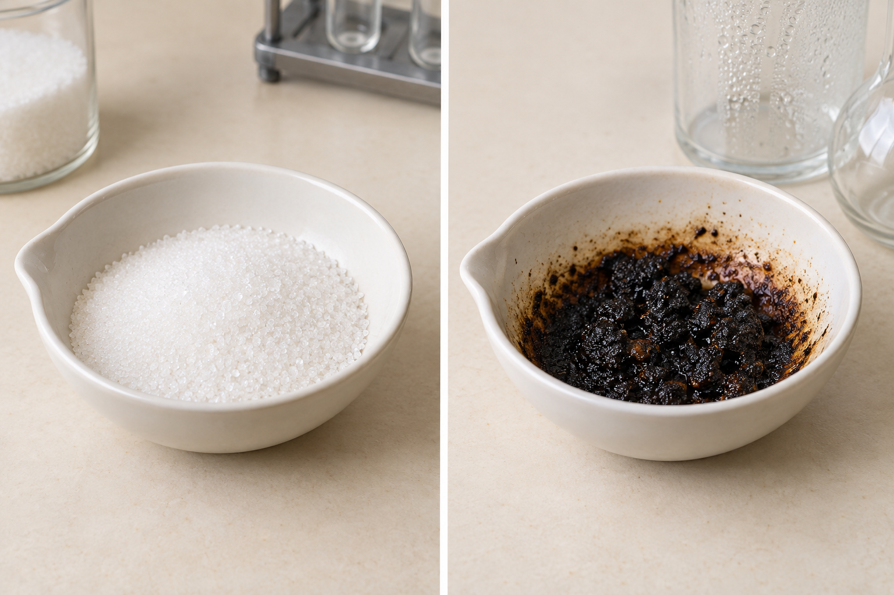
炭素を含むことがわかる
砂糖と比べよう
食塩も、黒くこげる？
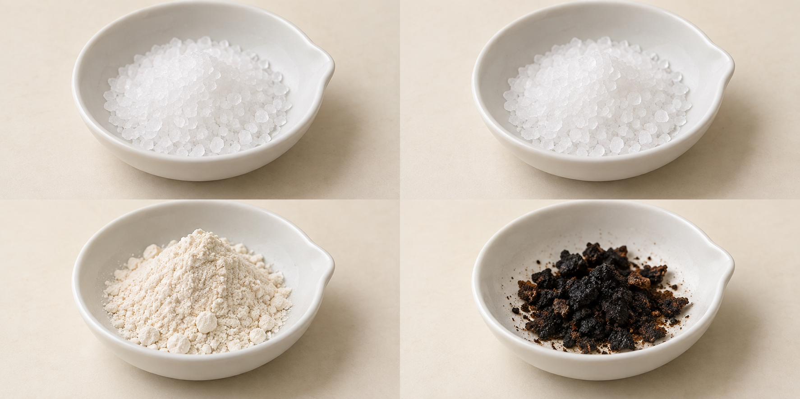
食塩は、黒くこげない
砂糖とは、加熱したときの変化が違う
もう一つの白い粉
小麦粉を加熱すると？
小麦粉も、黒くこげる
砂糖・小麦粉はこげる。食塩はこげない
覚えること
有機物と無機物
炭素を含み、燃えると二酸化炭素を生じる物質
有機物以外の物質
二酸化炭素など、炭素を含む無機物もある
物質を見分ける量
密度 — そろえる量を変えてみよう
体積をそろえる：それぞれ 10 cm³
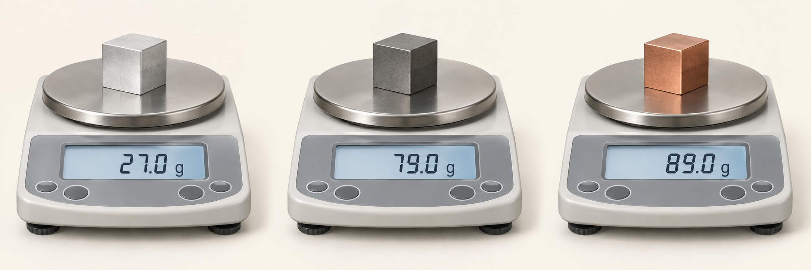
同じ体積でも、質量はバラバラ
質量をそろえる：それぞれ 30 g
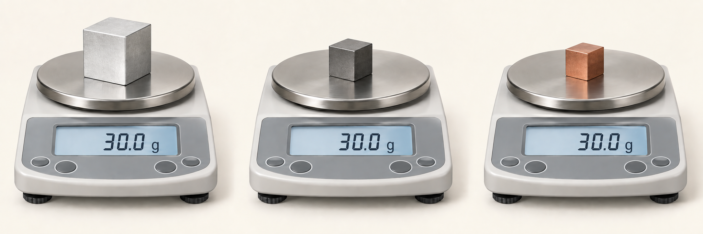
同じ質量でも、体積はバラバラ
アルミニウム・鉄・銅
そろえる量を変えて比べる
体積をそろえる
質量が違う
質量をそろえる
体積が違う
物質の違いを、1 cm³あたりの質量で比べよう
覚えること
密度は、1 cm³あたりの質量
単位は g/cm³
不規則な形の物体
質量と体積を測る
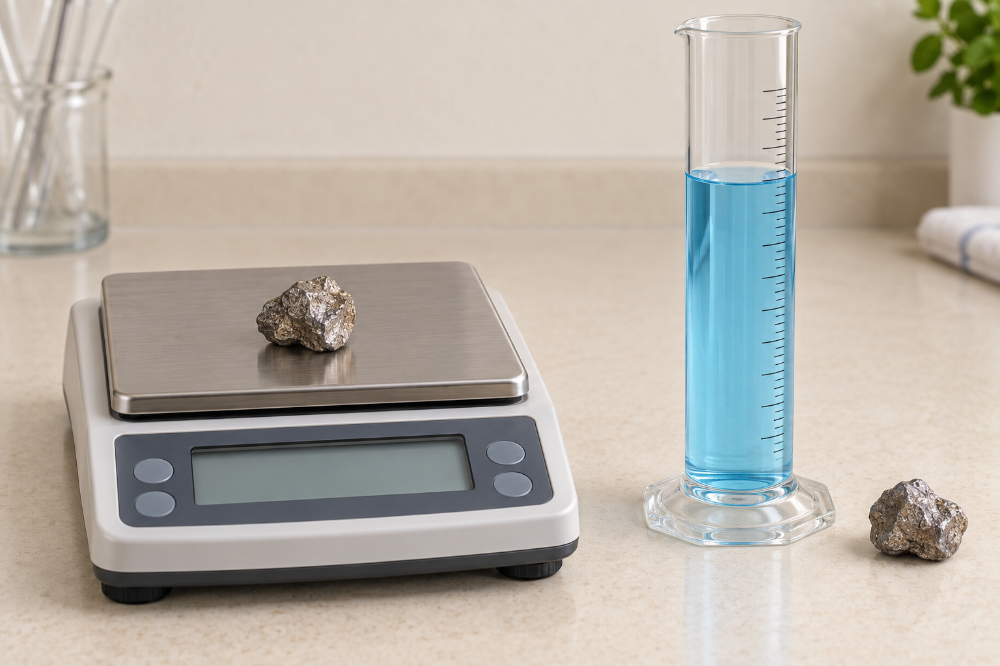
石を水に沈める
水位の変化から、石の体積を求めよう
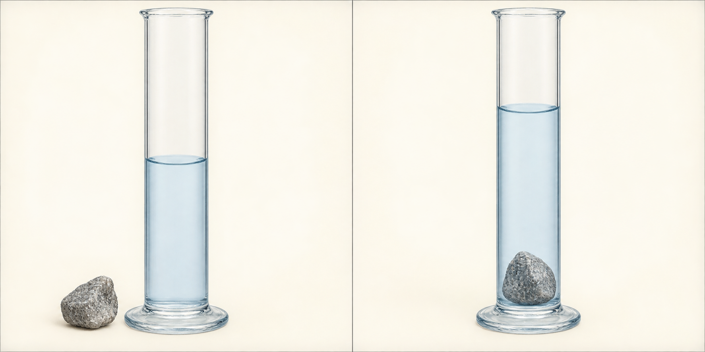
測定の補足
メスシリンダーの目盛りの読み方
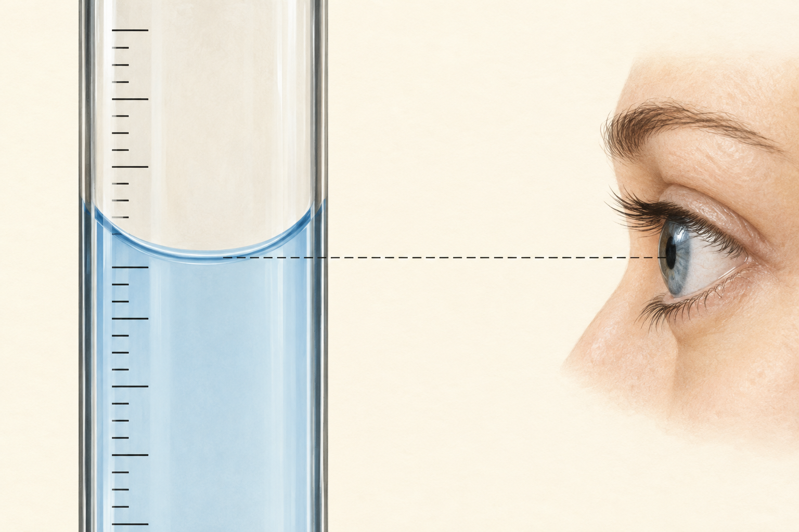
目を液面と
同じ高さにする
水面のへこんだ底を
正面から読む
最小目盛りの
1/10まで目分量で読む
単位量あたり
20 cm³で54 gなら、1 cm³では？
1 cm³あたり2.7 g → 密度2.7 g/cm³
問題1
同じ体積なら、どちらが重い？
1 cm³ … 2.7 g
1 cm³あたり … 8.9 g
銅
同じ体積なら、1 cm³あたりの質量が大きい方が重い
問題2
同じ質量なら、どちらが大きい？
1 cm³ … 2.7 g
30 g … 何 cm³？
30 ÷ 2.7 ≒ 11.1 cm³
1 cm³ … 8.9 g
30 g … 何 cm³？
30 ÷ 8.9 ≒ 3.4 cm³
アルミニウム
同じ質量なら、1 cm³あたりの質量が小さい方が大きい
単元のまとめ
物質は、性質から見分けられる
一つの結果だけでなく、複数の性質を比べる